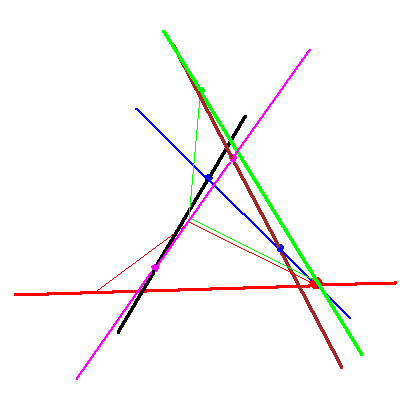

The problem of four lines in P3


The problem of four lines in P3 |
|
|  |
In the third, and some of the subsequent stages of the specialization sequence, nothing happens to the solution line through the fixed point, and nothing happens until the last stage to the solution line although at the end of this stage, it lies in the moving plane, and in fact it s now defined to be the line in the moving plane that meets the black and brown fixed lines. We continue to display the checkers, though. For the first solution line is is again the case (no,no) of Table 2/Figure 8 in GLR, but for the second solution line it is case (yes,no) in Table2/Figure 8. |
 
|